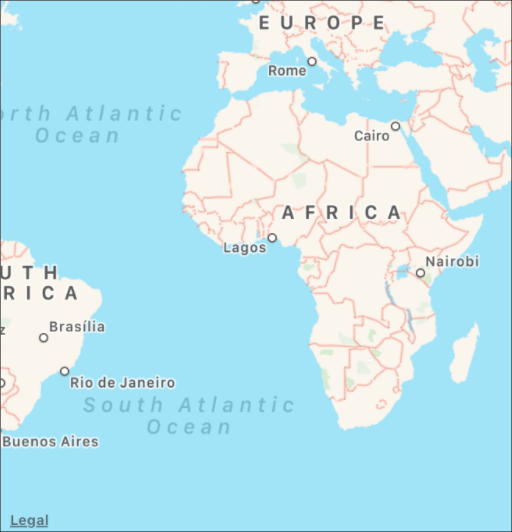
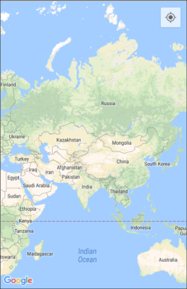
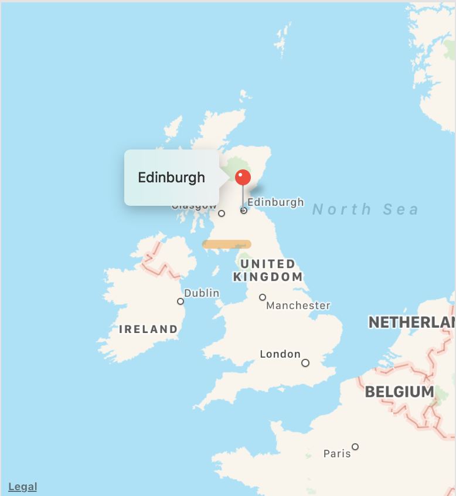
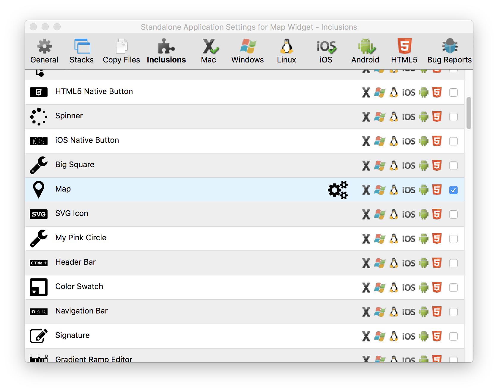
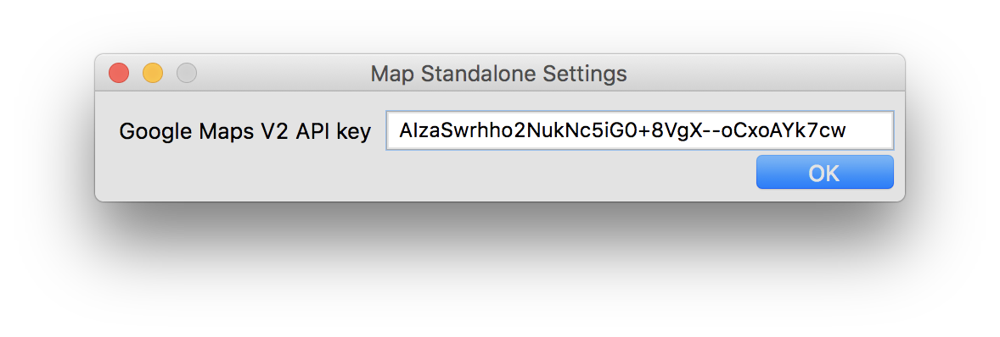

The map widget displays an interactive map control. It uses the Google Maps API on Android, and the MapKit Framework on iOS and 64bit Mac.
Mac / iOS

Android

A map widget can be created by dragging it out from the Tools Palette, where it appears with the following icon:
Alternatively it can be created in script using:
create widget as "com.livecode.widget.native.map"
In addition to the basic map view which can be navigated using the standard gestures, the map widget can display markers and polyline overlays.
Both of these properties are arrays, with a key for each marker or polyline, and with subkeys specifying the individual properties of that marker or polyline.
For example, here is some code setting a marker and a polyline on a map:
local tMarkers
put "55.9533,-3.1883" into tMarkers["edinburgh"]["coordinates"]
put "Edinburgh" into tMarkers["edinburgh"]["title"]
set the markers of widget 1 to tMarkers
local tPolylines
put "55,-3,55,-5" into tPolylines["line"]["coordinates"]
put "10" into tPolylines["line"]["width"]
put "228,128,0,100" into tPolylines["line"]["color"]
set the polylines of widget 1 to tPolylines
This produces the following:

The array key used to specify a marker is its tag, which is used to
identify the marker when sending the markerSelected message when it is
selected.
The region property consists of the centerCoordinates property
followed by the span property - i.e. it is a comma delimited list
specifying the coordinates of the center of the map (latitude and
longitude, in degrees north and east respectively) and the vertical and
horizontal delta in degrees from the to the sides of the map view.
The map widget sends the following messages:
* markerSelected pMarkerTag - Sent when a map marker is selected. pMarkerTag is the selected marker's tag (i.e. the array key corresponding to the marker)
* regionChanged - Sent when the map region changes due to user gestures.
In order to use the map widget on Android, you must create a Google Maps V2 API key for your app, and set it in the standalone settings for the map widget via the cog icon in the Inclusions pane of the standalone settings stack.

When the cog icon is clicked, the following window will pop up:

Simply enter your API key and you are ready to deploy to Android.